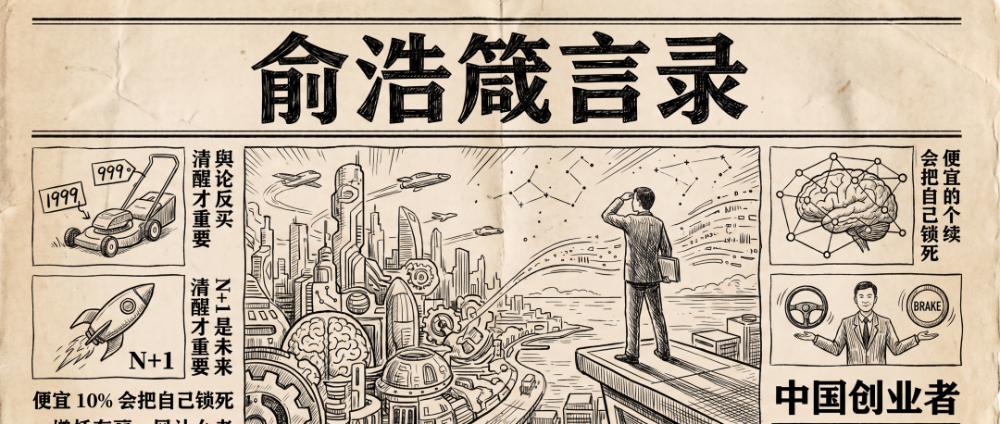

💡 俞浩箴言录
Yu Hao's aphorisms — business wisdom from Dreame's founder

《弱传播convey[kənˈveɪ] vt. 运送， 搬运， 转运；表达； 传播》里说，现实世界和舆论世界是反过来的。
梦想对商业commerce[ˈkɑmərs] n. 买卖，贸易；商务；商业成功一点都不重要。清醒才重要magnitude[ˈmægnəˌtud] n. 大小；量级；[地震] 震级；重要；光度。
管理administer[ədˈmɪnɪstər] v. 管理；执行；给予从来不是一个问题。管理govern[ˈgəvərn] v. 管理；支配；统治；控制能解决的都是优化问题，你没去做带来的损失才是最大的问题。
要么成功prosper[ˈprɑspər] v. 成功,兴隆,昌盛,使成功,使昌隆,繁荣，要么没有意义。
失败是所有创业者的必然certainty[ˈsərtənti] n. 必然,肯定;必然的事宿命。所有最伟大的目标都要超越生命的vital[ˈvaɪtəl] adj. 生死攸关的,重大的；生命的,生机的长度去完成。
我最向往的死亡方式：柯达创始人founder[ˈfaʊndə] n. 创始人那样——「我在这个世界上的任务完成了，我走了。」
真实的authentic[əˈθɛnɪk] adj. 真正的，真实的；可信的故事一点都不动人。最早什么能挣钱就干什么，连充电宝都想做。
割草机别人卖 999，中国厂商杀到 499，我们定 1999，反而卖爆。整个altogether[ˌɔltəˈgɛðər] n. 整个；裸体项目只花了 5000 万。
大多数bulk[bəlk] n. 体积，容量；大多数，大部分；大块企业成功建立主业后不敢冒险做大项目，因为一旦失败会拖累主业。如果不解决这个问题，后面所有品类的投入都不会比主业更大，就无法进入entrance[ˈɛntrəns] n. 入口；进入深海。
过去中国企业成功几乎都靠选赛道，练就的是「选赛道能力capability[ˌkeɪpəˈbɪləti] n. 能力」和「定义产品能力」，但这两种本质都是做选择。未来 40 年需要entail[ɛnˈteɪl] v. 使需要，必需；承担；遗传给；蕴含的是做成世界第一的能力。
绝大多数创业公司找到商业机会，最早是因为 CEO 发现了自己没被满足cater[ˈkeɪtər] v. (for)提供饮食及服务；(for/to)满足,迎合的需求。但当你的人生体验不再是世界的universal[ˌjunəˈvərsəl] adj. 全体的,宇宙的,世界的；普遍的，通用的全部，你的产品直觉也就越来越窄。
很多人做品牌最容易facilitate[fəˈsɪləˌteɪt] v. 促进；帮助；使容易犯的错：「我也能做爱马仕，我有一样的工厂，价格只要它的几分之一。」但没人会买。因为你给不出那个位置slot[slɑt] n. 位置；狭槽；水沟；硬币投币口。
CEO 同时管油门和刹车brake[breɪk] v. 刹车。我说了的事必须执行，但 99.9% 的事我不发表announce[əˈnaʊns] v. 正式宣布,发表意见。
CEO 一旦回答了「重点emphasis[ˈɛmfəsɪs] n. 重点；强调；加强语气是什么」，团队就容易盲目 all in 到某个方向。所以consequently[ˈkɑnsəkˌwɛntli] adv. 结果，因此，所以有些问题要拒绝回答。
很多 CEO 所谓的直觉，跟一个优秀工程师的判断diagnose[ˌdaɪəgˈnoʊs] v. 诊断(疾病)；判断(问题)差距没那么大。区别在于consist[kənˈsɪst] v. (in)在于；(of)由…组成,由…构成 CEO 的错误没人修正。
不要觉得决策counsel[ˈkaʊnsəl] n. 法律顾问；忠告；商议；讨论；决策只有你能拍板、别人永远学不会。这是幻觉illusion[ˌɪˈluʒən] n. 幻想，错误的观；错觉，幻觉，假象。
时间分配allocate[ˈæləˌkeɪt] v. 分配，分派；拨给：1/3 内部运营，1/3 第一现场感受变化，1/3 看全新知识（数学、物理、生物、神经科学）。
开会时间应该很少，大部分highlight[ˈhaɪˌlaɪt] n. 最精彩的部分时间是体验新的世界。
创新innovation[ˌɪnəˈveɪʃən] n. 创新，革新；新方法是 Mix。乔布斯从欧洲学设计，从日本学工艺，从禅修学清空自己，再结合bind[baɪnd] v. 结合；装订；有约束力；过紧美国技术。
用新技术做老品类，因为需求没那么大变化，成功succeed[səkˈsid] v. 成功；接替；继…之后率反而更高。
很多人以为自己在创新，其实走的是行业头部公司早就试过、并且失败collapse[kəˈlæps] n. 倒塌；失败；衰竭的路径。真正高效的是继承行业知识（N），避开evade[ɪˈveɪd] v. 逃避，回避；避开，躲避；回避失败路径，在此基础上做增量（+1）。
N-1 是过去：参照最好的crack[kræk] adj. 最好的；高明的产品做便宜版。N+1 是未来：在最好的产品上再加一点，让消费consume[kənˈsum] v. 消耗；消费；吃；喝者感知到，卖出溢价。
N+1 的商业价值比 N-1 大十倍：能拉高定价、能全球化globalization[ˌɡləʊbəlaɪˈzeɪʃn] n. 全球化、能成为苹果级的存在、竞争者极少。
做 100 款产品的成本costing[ˈkɒstɪŋ] n. 成本只比做 1 款多 1.2 倍。80% 是共享平台，差异discrepancy[dɪˈskrɛpənsi] n. 差异,不符在模块。与其想清楚clarity[ˈklærəti] n. 清楚，明晰；透明做哪个，不如都做了让市场告诉你。
要满足fulfill[fʊlˈfɪl] v. 履行；实现；满足；使结束（等于fulfil）市场需要，而不是自己觉得很酷。
所有品牌可以分成 S、A、B、C、D 五层，像原子的电子amplifier[ˈæmpləˌfaɪər] n. [电子] 放大器，扩大器；扩音器轨道。品牌层级hierarchy[ˈhaɪˌrɑrki] n. 层级；等级制度决定了利润空间。
科技品牌最佳定位是 B（奔驰的位置shell[ʃɛl] v. 剥落；设定命令行解释器的位置），不适合做 S（太高端受众过窄）。苹果是唯一特例。
定价应该比竞争对手comparative[kəmˈpærətɪv] n. 比较级；对手贵 10%。贵 10% 启动正循环：更好的preferable[ˈprɛfərəbəl] adj. 更好的，更可取的；更合意的人、更好的渠道、更好的体验、更高研发投入。
便宜 10% 会把自己锁死在老二。因为你永远在省成本、压薪资、开差一点的店，恶性循环circulate[ˈsərkjəˌleɪt] v. (使)循环,(使)流通。
品牌是社会资源resource[rɪˈsɔːs] n. 资源，财力；办法；智谋的总和。品牌定位决定了你能调动的供应链、渠道avenue[ˈævəˌnu] n. 大街；林荫路；途径，渠道，方法、人才、文化资源。
人们不是在追求ambition[æmˈbɪʃən] v. 追求；有…野心材质本身，是在追求稀缺性带来的力量象征。
人类humanity[juˈmænɪti] n. 人类；人性,人情；(pl.)人文科学总是愿意为「超出自己日常需求」的那一部分买单。特斯拉 2 秒加速accelerate[ækˈsɛlərˌeɪt] v. 使加速，使增速，促进；加速，绝大多数人一辈子不会踩到底，但这不妨碍他们想要它。
互联网模式壁垒来自网络效应，先发关键hinge[hɪnʤ] n. 铰链，折叶；关键，转折点；枢要，中枢。制造业manufacture[ˌmænjʊˈfæktʃə] n. 制造,制造业壁垒来自纵向整合（研发+供应链+生产+销售+售后），后发完全可以赢。
关键看投入input[ˈɪnˌpʊt] n. 投入；输入电路是正积累还是负积累。负积累是给你花同样的钱再做一遍，还是做不成。
硬件行业只有在持续盈利、研发能力不断积累的情况circumstance[ˈsərkəmˌstæns] n. 情况，情形下才能形成壁垒。很多lump[ləmp] n. 块，块状；肿块；瘤；很多；笨人新势力亏本卖车，什么都没积累。
不是第一名就不能做行业领导guidance[ˈgaɪdəns] n. 指导，引导；领导者。一个企业做行业领导者该做的事anxiety[æŋˈzaɪəti] n. 焦虑；渴望；挂念；令人焦虑的事，他也会成为第一名。
假定assumption[əˈsəmpʃən] n. 假定，设想；采取；承担世界不可知。传统方法追求消除不确定ascertain[ˌæsərˈteɪn] v. 确定，查明，弄清性，我们假定不确定性无法消除，索性都做一遍。
所有的本质entity[ˈɛntɪti] n. 实体；存在；本质都不是本质，它只是下一个被推翻前的真理。
几千年的规律一定比几百年更准，全球化的规律一定比某个市场更普适，100 个赛道里总结summarize[ˈsəmərˌaɪz] v. (summarise)概括,总结的规律一定比 1 个赛道更根本。
从 A 到 B，有两种方法：一种是清晰路径，假设hypothesis[haɪˈpɑθəsəs] n. 假设知识全部已知；一种是不停测试反馈feedback[ˈfidˌbæk] n. 反馈；成果，资料；回复来修正路线。在越来越多样化的今天，第二种更好。
人都喜欢即时反馈。思考本质规律和收益之间的关系太间接了，人天然不喜欢dislike[dɪsˈlaɪk] v. 不喜欢，厌恶这么慢的事。
人习惯用神话去理解absorb[əbˈzɔrb] v. 吸收；吸引；承受；理解；使…全神贯注复杂世界。在商业世界，这个「神话」myth[mɪθ] n. 神话；虚构的人，虚构的事叫乔布斯、马斯克。
读书只看序言。前三页讲要说什么知识，后面rear[rɪr] n. 后面；屁股；后方部队 300 页只是举例子。如果你真把一本书看完，知识面反而变窄。
公众传播diffuse[dɪfˈjuz] v. 扩散；传播中大家需要一个简单叙事，但真实世界很难被简单叙事。大部分installment[ˌɪnˈstɔlmənt] n. 安装；分期付款；部分；就职「圈套」都藏在被简化的故事里。
我厌恶disgust[dɪsˈgəst] n. 厌恶，嫌恶风险。在自主品牌能做成之前，同时meantime[ˈminˌtaɪm] adv. 同时；其间做米家和自主品牌，不赌单一方向。
血条厚 = 不盲目 all in。手机和汽车auto[ˈɔtoʊ] n. 汽车（等于automobile）；自动各占总人数 5%，主营业务稳固且盈利。
五个致命风险：需求判断错、产品做不出来、渠道没打通、卖不出溢价premium[ˈpriːmiəm] n. 额外费用；奖金；保险费;(商)溢价、有溢价但成本太高。每个环节成功率比别人高一点epoch[ˈɛpək] n. [地质] 世；新纪元；新时代；时间上的一点点，加起来就高很多。
几乎要求所有产品从推出市场的那一天就要实现accomplish[əˈkɑmplɪʃ] v. 完成；实现；达到盈利。
人才是培养cultivate[ˈkʌltɪveɪt] vt. 耕作， 栽培； 养殖；培养， 教养； 磨炼出来的，不是筛出来的。「是我们具备了把人培养educate[ˈɛʤəˌkeɪt] v. 教育,培养,训练成创业者的能力。」
把「牛人怎么做」拆成可复制的duplicate[ˈdupləˌkeɪt] adj. 复制的；二重的方法，让任何人照着方法都能成功。
很多公司做第二曲线高度altitude[ˈæltɪtjuːd] n. 高度， 海拔依赖单点负责人。要解决的是「人才复制clone[kloʊn] v. 无性繁殖，复制」的问题。
追觅七八年的成长速度，换外界可能相当于correspond[ˌkɔrəˈspɑnd] vi. 通信；符合， 一致；相当于， 对应 10-20 年。很多人从 1 号位起，有很大决策权限，但有边界boundary[ˈbaʊndəri] n. 边界；范围；分界线。
一个公司最重要的foremost[ˈfɔrˌmoʊst] adj. 最重要的；最先的是培养人才的能力。
为什么美国人做就很对，中国人做就很狂？如果「狂」意味着spell[spɛl] v. 拼，拼写；意味着；招致；拼成；迷住；轮值敢想，那就狂吧。
美国创业模型是单边博弈：AI、资本、叙事绑在一起往一个方向orientation[ˌɔriɛnˈteɪʃən] n. 方向；定向；适应；情况介绍；向东方推。中国创业者永远在左右权衡中求平衡，既要做梦又得活下去descend[dɪˈsɛnd] v. 下降；下去；下来；遗传；屈尊。这种环境surroundings[sərˈaʊndɪŋz] n. 环境；周围的事物逼出了世界上最强的创业者。
中国的 AI 路线不应是模仿ape[eɪp] vt. 模仿，而应是组合，用小模型组合成更大的智能系统。
一个能做多品类的公司establishment[ɪˈstæblɪʃmənt] n. 确立，制定；公司；设施天然比单一品类更厉害；一个全球化的公司天然比局部市场更有优势superiority[ˌsupɪriˈɔrɪti] n. 优越，优势；优越性。
来自晚点访谈 对话dialog[ˈdaɪəlɔg] n. (dialogue)对话,对白追觅俞浩：我的真实世界